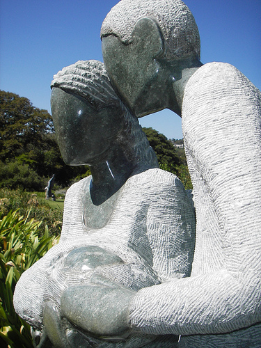

Map |
Characters |
Culture |
Grammar |
Glossary |
Links |
Authors |
|---|

|
Naming in ZimbabweThe main character in our Shona village is Chipo. This popular name for girls means gift. In Shona culture, people believe that a name “can shape a person’s character and have a bearing on future behavior” (Chitando 2001: 145); thus many names “have a particular meaning or carry a special message” (Moyo 2004). Children are usually named by their parents, though a close relative may be asked to contribute a name. Pongweni (1983: 2-3) list six categories of Shona names:
|
||||||||||||||||||||||||||||||||||||||||||||||||||||||||||||||||||||||||||||||||||||||||||||||||||||||
Before Europeans reached Zimbabwe in 1890, most Shona names were “traditional and culture-bound” (Chitando 145; cf. Pongweni 2). Functions performed by names included: thanking the spiritual world; making requests; complaining; looking to the future; addressing opponents; marking a special event; reminding people of circumstances surrounding either the conception or birth of a child; hitting out at one’s enemies; expressing delight, gratitude or disappointment; gloating over something; and expressing special sentiments over life’s trials and tribulations (Chitando; Moyo). The contextual meaning of the name depends on who named the child (e.g. the mother or her in-laws) and to whom the name is addressed.
Ancestral and culture-bound names began to appear during the war as well, as parents living through the chimurenga named their children Shona names referring to that experience.
Many children born after the war have Shona names with Christian meanings.
Children of parents who are heavily involved in church activities are often given biblical names, such as Joseph, Josphat, Samuel, Rebecca, Nathanil, Jedaiah, Shemaiah, Shaddai, and so on (Chitando 150).English words are also common names for Shona speakers, such as Polite, Oblivious, Doubt, Most, Last, Evidence, Energy, Knowledge, and Final (Moyo; Chanetsa). One also finds English names which are obviously translated from older Shona ones:
Due to the absence of written records before Europeans arrived in Zimbabwe, it is not clear when Shona speakers began using surnames. Oral histories of the events of the 19th century refer to heroes and heroines by a single name (Pongweni 4). Works CitedChanetsa, Benhilda. “Zimbabwe: Names that Tell a Story.” The Independent (Bangladesh). 25 November 2005. Chitando, Ezra. “Signs and Portents? Theophoric Names in Zimbabwe.” Word & World 21:2 (Spring 2001): 144-151. “Citizens Innovative When it Comes to Naming their Children.” Daily News (Harare). 19 July 2002. Makonese, Shylock. “The fallacy of changing colonial names.” Daily News (Harare). 22 February 2002. Moyo, Mbulawa. “Time for Names Chimurenga.” The Financial Gazette (Harare). 5 August 2004. Pongweni, Alec J.C. What’s in a Name? A Study of Shona Nomenclature. Gweru, Harare & Masvingo: Mambo Press, 1983. |
|||||||||||||||||||||||||||||||||||||||||||||||||||||||||||||||||||||||||||||||||||||||||||||||||||||||